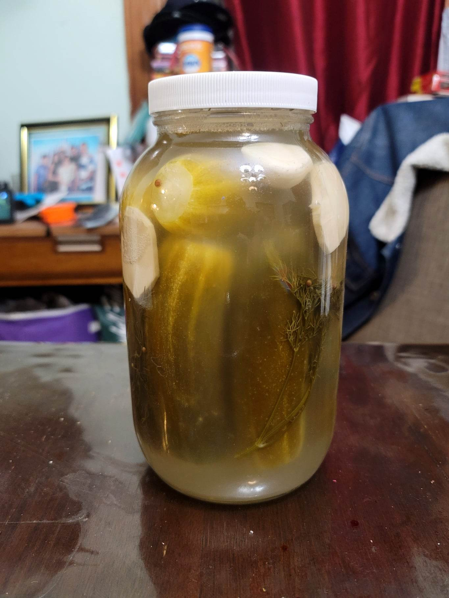

Dill Pickles

Ingredients:
- 8 Pickling cucumbers, ends removed
- 2 1/4 cup (532 ml) Water, nonchlorinated + 1 tbsp (18 g) Salt, to make a 3.5% brine + more if needed
- 2 cloves Garlic
- Optional: 1 inch Horseradish, peeled and sliced
- 2 Dill umbrellas or 3-5 sprigs Dill
- 12 Black peppercorns or Mixed peppercorns
- 8 Coriander seeds
- 2 Bay leaves
- 10 Mustard seeds
- 2 Cloves
- 2 berries Allspice
Instructions:
- Add in half the seasonings to the bottom of a half gallon jar. Then add in the cucumbers, organizing the top cucumbers to ensure nothing floats above the brine. Then add in the rest of the seasonings.
- Add in the brine to fully submerge the contents of the jar, leaving about 1/2" of headspace. Loosely cover and let ferment at room temperature for 3-4 days for half-sour pickles or 8-10 days for full-sour pickles.
- Taste and once ready, serve or transfer to a fridge to stop further fermentation.